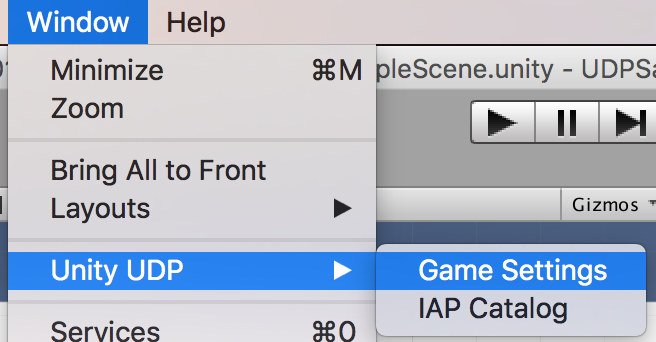

Configuring and building your game for UDP#
Configuring UDP SDK#
The UDP SDK is an easy way to integrate your game with UDP. To configure the UDP SDK, you need to the following steps:
Step 1: Import UDP SDK#
Open Unity and log in with a Unity account. If you don’t have a Unity account yet, register one in https://id.unity.com.
Create or open a project and import the SDK. The SDK can be downloaded from https://unitytech.github.io/udp/.
- Stand-Alone UDP SDK
If you are currently not using Unity IAP, download and import this SDK. You also need to complete the technical integration according to Technical integration (without Unity IAP). - Unity IAP Pagckage
If you are currently using Unity IAP, download and import this SDK. You also need to complete the technical integration according to Technical integration (with Unity IAP).
Step 2: Generate a Unity client and test accounts#
Create a
Game Settings.assetfile.
Click the
Game Settings.assetfile underAssets > Plugins > UnityChannel > UdpSupport > Resourcesand generate a Unity client and test accounts.
In the above screenshot, you may need to use the following fields in
UDP Client Settings:
Client IDis the issued client identifier.Client RSA Public Keyis used to validate the purchase signature for UDP.Client Secretis the key to encrypting the receipt sent to developers’ server (Callback URL).Callback URLprovides your own server to receive the stores’ callbacks.
Step 3: Implement IAP#
Implement IAP if you have items to sell in your game.
Building your game#
Create a local Android APK build in the Editor (File > Build Settings… > Android > Build). For more information, refer to Getting started with Android development